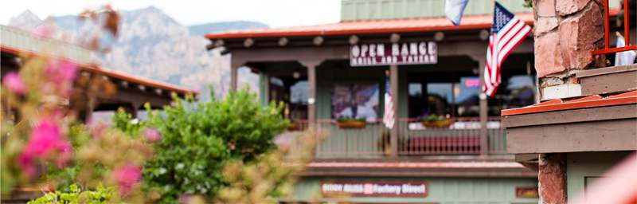

Седона
Седона – небольшой городок в Аризоне, заслуживающий большего!
Рассмотрим 5 причин, по которым Седона круче, чем Гранд Каньон
Настоящий городок
– №1 –
Седона - не аттракцион для туристов, там течет своя жизнь.
-
Жилье
Рекомендуем пожить в настоящем мотеле, все как в кино!
-
Еда
Всегда заказывайте фирменный бургер, вы не разочаруетесь!
-
Сувениры
Не только китайского, но и местного производства!
Там есть мост Дьявола
– №2 –
Да, по нему можно пройти! Если конечно вы осмелитесь.

Небольшая площадь
– №3 –
Все достопримечательности находятся очень близко.
Красивая дорога
– №4 –
Ехать в Седону из Лас-Вегаса совсем не скучно!
Мало туристов
– №5 –
Большинство едет в Гранд Каньон и толпится там.
Заинтересовались?
Заинтересовались?Укажите предполагаемые даты поездки, и мы покажем лучшие предложение гостиниц в Седоне
Поиск гостиницы
Поиск гостиницы в Седоне